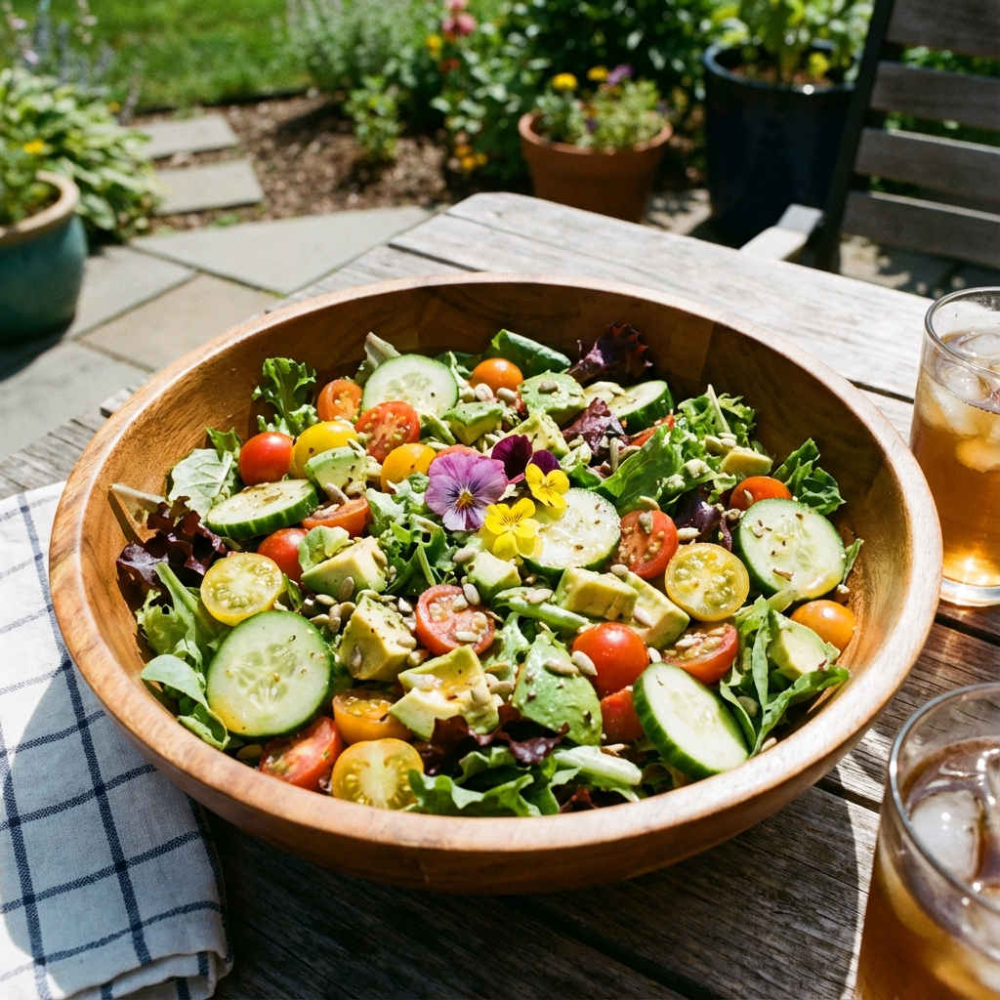

Vibrant Summer Harvest Salad

Instructions
1
Prep the Vegetables
Wash and dry the mixed greens thoroughly. Slice the cherry tomatoes in half, slice the cucumber into rounds, and dice the avocado.
2
Make the Dressing
In a small jar or bowl, whisk together the lemon juice, extra virgin olive oil, salt, and pepper until emulsified.
3
Assemble
In a large salad bowl, combine the greens, tomatoes, cucumber, and red onion. Drizzle with half the dressing and toss gently to coat.
4
Finish and Serve
Top with the diced avocado (adding it last prevents it from getting mashed). Drizzle with the remaining dressing and serve immediately.